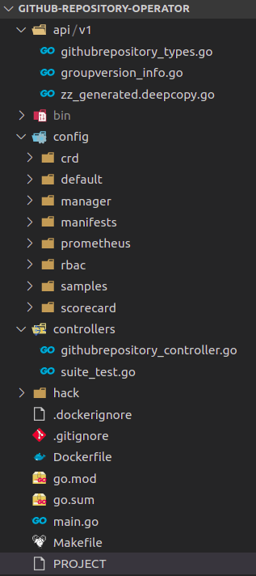
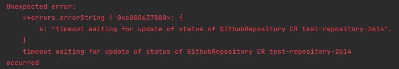
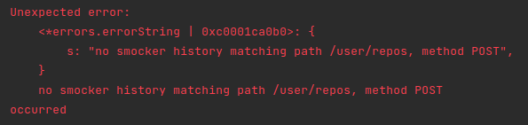

Introduction
Kubernetes operator is one of the patterns that allows you to extend Kubernetes to fit your business requirements. This series of posts is going to go through the process of creating a very simple Kubernetes operator following TDD approach. The posts assume prior knowledge of Kubernetes operator pattern, what it is, when to use it, basic concepts of operator pattern like reconcillation loop etc. Below are some links to get started on that:
- https://kubernetes.io/docs/concepts/extend-kubernetes/operator/
- https://www.redhat.com/en/topics/containers/what-is-a-kubernetes-operator
The Operator
The operator that we are going to build is a Github Repository Operator. It allows us to create custom resources GithubRepository and the operator will create actual github repositories using specification from those CRs. It’s just a toy example and probably not going to give much value in real life, but it’s complicated enough to demonstrate TDD and operator development process.
How the series is going to look like:
- Scaffold and first slice of the operator: creation of github repository (this post)
- Update and delete of github repository
- Creating of github repository by cloning another repository
- Validation using webhooks
Planning
Before diving into actual coding, we need to plan how the custom resource is going to look like, what fields it should support. For now, the CR is going to contain a few fields:
owner,repo,description: github owner, name and description of the repository to be createdtemplateOwner,templateRepo: (optional) owner and repository name of a template repository to clone from
|
|
Some requirements:
ownerandrepocannot be changed after created the first time. We need some validation to enforce thistemplateOwnerandtemplateRepoare only used during creation and ignored during update
Get started
Scaffold the project
We are going to use Operator SDK version 1.8.1 Let’s scaffold the project directory:
|
|
And generate skeleton for our controller
|
|
Let’s go over some of the most important directories/files in the generated project:

api/v1/githubrepository_types.go: contain Go declaration of our custom resource, its spec and status structure. We are going to modify this file next to add additional fields that we need abovecontrollers/githubrepository_controller.go: our controller. The most important function here isReconcile, which is called whenever there’s any update to the custom resourceconfig: this contains a bunch of yaml files for various things. It has a lot of files and it took me a while to understand purpose of each config the first time, so hopefully below explaination makes it easier for you to understand:samples: exampleGithubRepositoryresource definition filecrd: CRD definition forGithubRepositoryresourcemanager/prometheus/rbac: actual resource definition to deploy controller-manager, prometheus monitor etc, acting as bases for kustomizedefault: kustomize patches, to be applied on top of bases above
Add fake Github API
The operator needs to interact with Github API. For quick feedback and safer local development and testing, we should use a fake Github API server that responds to above endpoints. For this, I choose smocker
Let’s add a Make task and script to start smocker docker container in the background:
|
|
This script also uses smocker admin api to register mock definitions (There is no easy way to let smocker load mock definitions automatically when starting up at the moment). For now we don’t have any mock definition yet. They will be added progressively when we develop the operator.
Smocker provides a convenient admin UI that can be accessed at http://localhost:8089
First end to end test
We will follow outside-in TDD and start with an end to end test to verify that when a GithubRepository custom resource is created, it will create the corresponding github repository using Github API
The skeleton of end to end test (in Ginkgo) is already created for us at controllers/suite_test.go. Let’s modify the BeforeSuite to add in this code at the end:
|
|
The generated code starts EnvTest but doesn’t create the controller manager or register our reconciler with any manager. The snippet above does that and also creates a kubernetes client so that we can query kubernetes server.
Now the setup and teardown are propertly wired up, let’s add the first test:
|
|
this test uses kubernetes client to create a GithubRepository custom resource. There are 2 things we want to verify as the result of reconcillation:
- The custom resource status is updated to successful after reconcillation. This is verified by these 2 lines:
|
|
- The reconcillation invoke Github API to create repository. To verify this, we query smocker admin API for the request history and make sure that history matches our expectation.
We can already see that the test is not compilable becuse GithubRepositorySpec and GithubRepositoryStatus do not contain the fields we want in the test. Let’s quickly go to api/v1/githubrepository_types.go and add those in:
|
|
Now run the test with make test and it should fail with below error:

Fix the test
The simplest way to fix above error is to just update the status to successful without doing anything:
|
|
The test should fail with 2nd error message:

To fix it, we need to invoke Github API to create repository. We will use Go Github for that:
|
|
the logic to call github API does not belong to controller reconcillation function and should have its own package.
There are several ways to design the new package:
- It can be a package that is specific to github api. Client of this package will explicitly call function like:
github.CreateRepository(),github.DeleteRepository()etc. It’s simpler but client’s tied to this specific implementation. - Or it can be a general package like
repositorywith an exposed contract/interface to the client. Github is only an implementation. Other possible implementations are gitlab, bitbucket etc (assuming all of them having similar apis that we need). This is a bit more future-proof and flexile, with the cost of more abstraction and complexity. Another minor disadvantage is that we need to rename our project and controller since it is no longer specific to github.
I’m not a fan of over-engineering so will choose approach 1 for now. If there’s a need to make it more generic in the future, it’s simpler enough to extract interface and move to approach 2.
Add new package
Ideally the new package name should be github, but it’s taken by go-github library above, so let’s call the new package githubapi
Tests for this new package are going to be integration tests. Integration is an overloaded term. Different people have their own definition of integration tests. For me, integration tests verify the interaction at the edge/boundary of the system with external system. In this case, they are verifying the interaction between our github API client code and github api (smocker in local).
I find it easier to start with a negative test case: return authorization error when we don’t provide token. This is a possible error returned from github api. We actually don’t care what error returned, as long as that same error’s returned by CreateRepository(), so any type of error works:
|
|
To make it pass, we need to add a smocker definition file at local/smocker/no-token-error.yaml:
|
|
and implement the code:
|
|
next test is to verify happy path. We need a way to verify that smocker is called with POST request to create the repository. This is similar to what we did in the end to end test. So before creating this test, we need to move the utility functions to verify smocker call to an internal package smocker. It’s not ideal to create a package for something that is used only in test, but I can’t find a better way to share test utility in golang. After moving the smocker utility to new package, we can write the new test:
|
|
add another mock definition file to make it pass: this mock matches on Authorization header with valid-token value and uses dynamic response to return the same repo name from request in the body. The body is only partial response from Github API.
|
|
One last thing: for now we only focus on creation, and we don’t want to call github API creation endpoint again if the repo already exists (the api will return an error). We will check whether the repository with that name exists before creating it. When we work on update scenario later, this test can be modified to support that.
|
|
and implementation:
|
|
githubapi package is done, now just need to use it in controller:
|
|
The end to end test should pass now
Test it out
Our code is all wired up, let’s test it out:
- Go to Github -> Settings -> Developer settings -> Personal access tokens -> Generate new tokens, give it
Repopermission - Export token above as
GITHUB_API_TOKENenvironment variable in your terminal - Run
make installto install CRD to your local kubernetes cluster - Run
make runto run controller in your terminal - Update sample CR at
./config/samples/pnguyen.io_v1_githubrepository.yaml - In another terminal, run
kubectl apply -f ./config/samples/pnguyen.io_v1_githubrepository.yaml - Verify that new github repository created
- Run
kubectl get githubrepository your-cr-name -o yamland check thatstatus.successfulis set to true